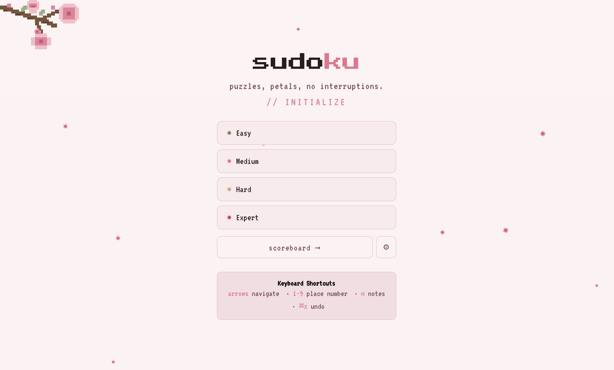

Sudoku Web App
An ad-free Sudoku web app with a custom puzzle engine · April 2026
Most mobile Sudoku apps interrupt gameplay with ads after every puzzle. I built my own: no ads, no interruptions, just puzzles. I used this as a chance to dig into the algorithmic side of Sudoku: generating puzzles with controllable difficulty, and rating them the way a human solver would.

Landing page with sakura pixel art theme
Overview
Built with modern tools
React for the UI, TypeScript for type safety, and Vite for fast development builds. Puzzle generation runs in a Web Worker to keep the UI responsive.
Human-style rating
Developed a seven-technique difficulty rater that evaluates puzzles based on the solving strategies required, not just the number of clues removed: mimicking how a human player would assess difficulty.
Full game experience
Includes a pause/resume timer, local scoreboard for tracking best times, multiple difficulty levels, and input validation with error highlighting.
Sakura pixel art theme
Custom pixel art aesthetic inspired by Japanese cherry blossom motifs. Designed to feel like a retro game while maintaining a clean, modern interface.
Demo
Key Features
- Puzzle generation powered by Web Workers for non-blocking UI performance
- Seven-technique human-style difficulty rater for accurate puzzle grading
- Four difficulty levels rated by human solving techniques, not just clue count
- Pause-and-resume timer with grid blackout to prevent peeking
- Local scoreboard tracking personal records, streaks, and recent times per difficulty
- Input validation and real-time error highlighting
- Notes mode with pencil-mark candidates per cell
- Settings panel with toggles for every gameplay aid (highlighting, errors, auto-clear notes, remaining counts)
- Pencil-and-paper "purist mode" that disables all aids for an authentic feel
- Optional manual check button as a middle ground between full assistance and purist mode
- Unlimited undo with full notes-state restoration
- Full keyboard navigation: arrows, 1–9, N for notes, ⌘Z undo, Esc to pause
- Responsive layout for desktop and mobile play
- Custom sakura pixel art theme with cohesive visual design
Technical Highlights
The difficulty rating system uses seven distinct solving techniques (from naked singles to X-wing patterns) to classify each puzzle. Rather than simply counting empty cells, the rater analyzes which strategies a human solver would need, producing more accurate and satisfying difficulty levels.
Puzzle generation runs entirely in a Web Worker thread, preventing the main UI from freezing during the computationally intensive process of generating and validating new puzzles.
← Back to Projects